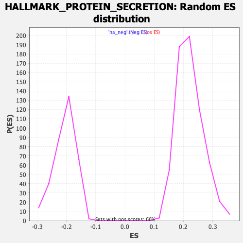

| | | Dataset | CK_basal |
| Phenotype | NoPhenotypeAvailable |
| Upregulated in class | na_neg |
| GeneSet | HALLMARK_PROTEIN_SECRETION |
| Enrichment Score (ES) | -0.5056382 |
| Normalized Enrichment Score (NES) | -2.4446049 |
| Nominal p-value | 0.0 |
| FDR q-value | 0.0 |
| FWER p-Value | 0.0 |
Table: GSEA Results Summary
Fig 1: Enrichment plot: HALLMARK_PROTEIN_SECRETION
Profile of the Running ES Score & Positions of GeneSet Members on the Rank Ordered List
| SYMBOL | RANK IN GENE LIST | RANK METRIC SCORE | RUNNING ES | CORE ENRICHMENT | | 1 | AP1G1 | 32 | 3.443 | 0.0268 | No |
| 2 | VAMP4 | 336 | 2.530 | 0.0320 | No |
| 3 | KRT18 | 659 | 2.238 | 0.0339 | No |
| 4 | ERGIC3 | 1078 | 1.997 | 0.0289 | No |
| 5 | ANP32E | 1521 | 1.805 | 0.0210 | No |
| 6 | BNIP3 | 1924 | 1.671 | 0.0141 | No |
| 7 | RAB9A | 2657 | 1.465 | -0.0115 | No |
| 8 | GLA | 3051 | 1.370 | -0.0204 | No |
| 9 | COPE | 3878 | 1.191 | -0.0531 | No |
| 10 | GOSR2 | 4421 | 1.086 | -0.0720 | No |
| 11 | ICA1 | 4721 | 1.024 | -0.0790 | No |
| 12 | ATP7A | 5057 | 0.959 | -0.0883 | No |
| 13 | ATP6V1B1 | 5856 | 0.821 | -0.1226 | No |
| 14 | CAV2 | 5961 | 0.801 | -0.1214 | No |
| 15 | SH3GL2 | 6786 | 0.659 | -0.1583 | No |
| 16 | ATP6V1H | 6788 | 0.658 | -0.1530 | No |
| 17 | TOM1L1 | 7007 | 0.620 | -0.1591 | No |
| 18 | M6PR | 7594 | 0.520 | -0.1849 | No |
| 19 | STX7 | 8420 | 0.384 | -0.2242 | No |
| 20 | YKT6 | 8626 | 0.348 | -0.2319 | No |
| 21 | VAMP7 | 8726 | 0.333 | -0.2343 | No |
| 22 | BET1 | 8931 | 0.297 | -0.2423 | No |
| 23 | EGFR | 9269 | 0.236 | -0.2577 | No |
| 24 | ARFGEF1 | 9539 | 0.193 | -0.2700 | No |
| 25 | RPS6KA3 | 9670 | 0.174 | -0.2752 | No |
| 26 | CLN5 | 10099 | 0.103 | -0.2964 | No |
| 27 | STAM | 10374 | 0.055 | -0.3100 | No |
| 28 | ZW10 | 10388 | 0.052 | -0.3103 | No |
| 29 | RAB22A | 10481 | 0.038 | -0.3147 | No |
| 30 | VPS4B | 11003 | -0.057 | -0.3410 | No |
| 31 | ARFIP1 | 11239 | -0.096 | -0.3523 | No |
| 32 | CLTA | 11561 | -0.155 | -0.3676 | No |
| 33 | AP2M1 | 11595 | -0.160 | -0.3680 | No |
| 34 | VPS45 | 11718 | -0.182 | -0.3727 | No |
| 35 | KIF1B | 11998 | -0.229 | -0.3852 | No |
| 36 | GALC | 12074 | -0.240 | -0.3871 | No |
| 37 | STX16 | 12116 | -0.249 | -0.3872 | No |
| 38 | CLCN3 | 12341 | -0.291 | -0.3963 | No |
| 39 | TMED10 | 12952 | -0.407 | -0.4243 | No |
| 40 | TMED2 | 13043 | -0.426 | -0.4254 | No |
| 41 | STX12 | 13338 | -0.486 | -0.4366 | No |
| 42 | SGMS1 | 13358 | -0.489 | -0.4335 | No |
| 43 | TSPAN8 | 13529 | -0.519 | -0.4380 | No |
| 44 | AP3S1 | 13791 | -0.574 | -0.4467 | No |
| 45 | SCAMP3 | 14117 | -0.635 | -0.4582 | No |
| 46 | ADAM10 | 14327 | -0.673 | -0.4634 | No |
| 47 | DST | 14428 | -0.691 | -0.4628 | No |
| 48 | IGF2R | 14646 | -0.742 | -0.4679 | No |
| 49 | AP2S1 | 14678 | -0.750 | -0.4633 | No |
| 50 | NAPG | 14856 | -0.782 | -0.4659 | No |
| 51 | SEC22B | 15072 | -0.823 | -0.4702 | No |
| 52 | MAPK1 | 15430 | -0.907 | -0.4811 | No |
| 53 | SNAP23 | 15574 | -0.945 | -0.4807 | No |
| 54 | TMX1 | 16040 | -1.059 | -0.4959 | Yes |
| 55 | ABCA1 | 16052 | -1.061 | -0.4877 | Yes |
| 56 | SEC31A | 16091 | -1.070 | -0.4808 | Yes |
| 57 | DNM1L | 16111 | -1.074 | -0.4730 | Yes |
| 58 | ARF1 | 16193 | -1.092 | -0.4681 | Yes |
| 59 | RAB2A | 16421 | -1.147 | -0.4703 | Yes |
| 60 | SEC24D | 16808 | -1.254 | -0.4799 | Yes |
| 61 | SSPN | 16842 | -1.263 | -0.4711 | Yes |
| 62 | COPB1 | 17083 | -1.334 | -0.4725 | Yes |
| 63 | RER1 | 17728 | -1.539 | -0.4929 | Yes |
| 64 | ATP1A1 | 17945 | -1.631 | -0.4906 | Yes |
| 65 | CTSC | 17964 | -1.640 | -0.4780 | Yes |
| 66 | AP3B1 | 17981 | -1.645 | -0.4653 | Yes |
| 67 | TPD52 | 18180 | -1.734 | -0.4612 | Yes |
| 68 | SCRN1 | 18216 | -1.750 | -0.4485 | Yes |
| 69 | TSG101 | 18239 | -1.761 | -0.4351 | Yes |
| 70 | RAB14 | 18246 | -1.763 | -0.4209 | Yes |
| 71 | CLTC | 18278 | -1.774 | -0.4079 | Yes |
| 72 | AP2B1 | 18326 | -1.795 | -0.3955 | Yes |
| 73 | SOD1 | 18379 | -1.821 | -0.3832 | Yes |
| 74 | LMAN1 | 18474 | -1.869 | -0.3726 | Yes |
| 75 | COG2 | 18476 | -1.869 | -0.3572 | Yes |
| 76 | YIPF6 | 18653 | -1.969 | -0.3500 | Yes |
| 77 | SCAMP1 | 18697 | -1.989 | -0.3358 | Yes |
| 78 | MON2 | 18773 | -2.041 | -0.3229 | Yes |
| 79 | OCRL | 18784 | -2.048 | -0.3065 | Yes |
| 80 | PPT1 | 18795 | -2.054 | -0.2901 | Yes |
| 81 | RAB5A | 18798 | -2.056 | -0.2732 | Yes |
| 82 | VAMP3 | 18799 | -2.056 | -0.2563 | Yes |
| 83 | GBF1 | 18872 | -2.109 | -0.2426 | Yes |
| 84 | PAM | 18942 | -2.167 | -0.2283 | Yes |
| 85 | LAMP2 | 19106 | -2.336 | -0.2174 | Yes |
| 86 | ARFGAP3 | 19157 | -2.393 | -0.2002 | Yes |
| 87 | USO1 | 19266 | -2.557 | -0.1847 | Yes |
| 88 | ARFGEF2 | 19270 | -2.561 | -0.1637 | Yes |
| 89 | NAPA | 19345 | -2.696 | -0.1453 | Yes |
| 90 | CD63 | 19348 | -2.706 | -0.1231 | Yes |
| 91 | GOLGA4 | 19360 | -2.736 | -0.1011 | Yes |
| 92 | COPB2 | 19453 | -3.076 | -0.0804 | Yes |
| 93 | SNX2 | 19492 | -3.282 | -0.0553 | Yes |
| 94 | GNAS | 19495 | -3.300 | -0.0282 | Yes |
| 95 | ARCN1 | 19510 | -3.596 | 0.0007 | Yes |
Table: GSEA details [plain text format]

Fig 2: HALLMARK_PROTEIN_SECRETION: Random ES distribution
Gene set null distribution of ES for HALLMARK_PROTEIN_SECRETION